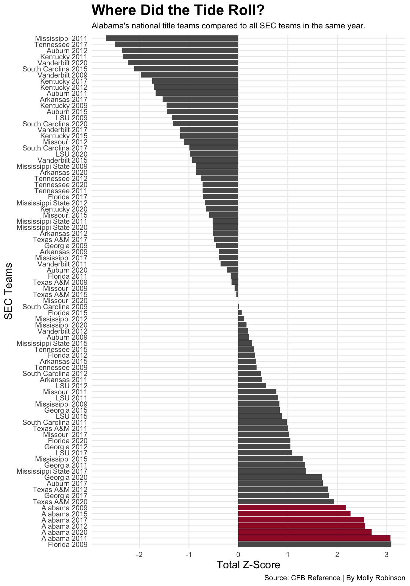
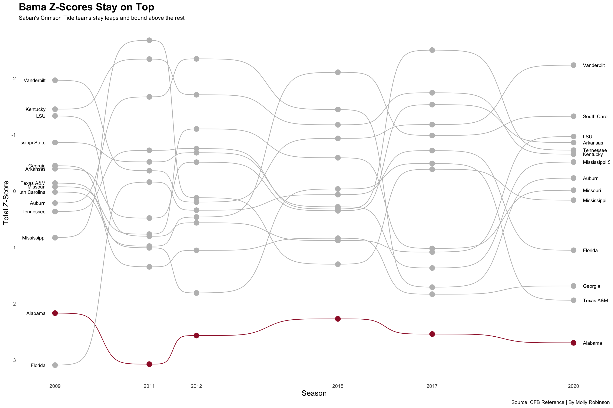
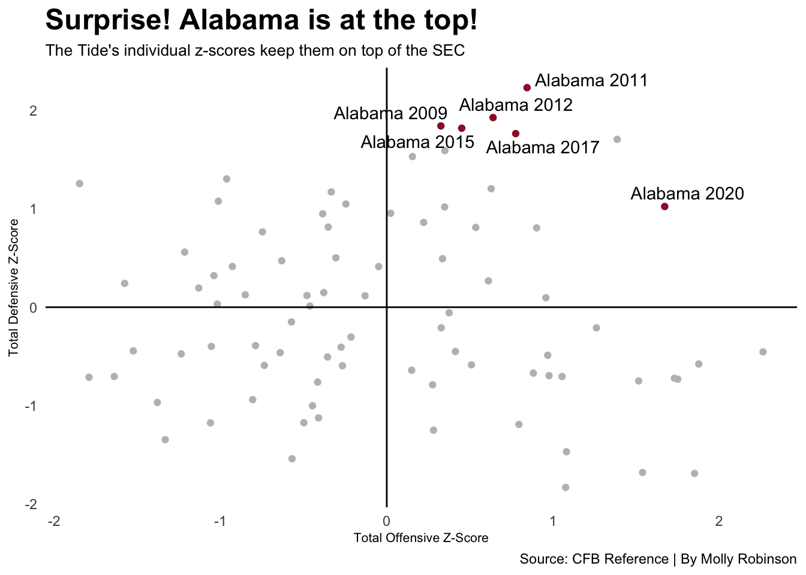

Code
library(tidyverse)
library(ggrepel)
library(gt)
library(ggbump)Molly Robinson
October 27, 2021
Nick Saban’s dynasty as Alabama head coach includes over 170 wins, 100 plus draft pics, three Heisman winners and eight National Championship appearances, six of which resulted in National Titles.
Since 2008, Alabama under Saban has seen winning seasons, with 10 wins being their lowest number of wins. Alabama’s 2009, 2011, 2012, 2015, 2017, and 2020 National Championship titles are impressive in this era of college football, but which Saban team is considered the best?
First, I gathered the total offensive and defensive data from each year the Crimson Tide won the national title.
offense09 <- read_csv("totaloffense09.csv") %>% mutate(Season = 2009)
defense09 <- read_csv("totaldefense09.csv") %>% mutate(Season = 2009)
offense11 <- read_csv("totaloffense11.csv") %>% mutate(Season = 2011)
defense11 <- read_csv("totaldefense11.csv") %>% mutate(Season = 2011)
offense12 <- read_csv("totaloffense12.csv") %>% mutate(Season = 2012)
defense12 <- read_csv("totaldefense12.csv") %>% mutate(Season = 2012)
offense15 <- read_csv("totaloffense15.csv") %>% mutate(Season = 2015)
defense15 <- read_csv("totaldefense15.csv") %>% mutate(Season = 2015)
offense17 <- read_csv("totaloffense17.csv") %>% mutate(Season = 2017)
defense17 <- read_csv("totaldefense17.csv") %>% mutate(Season = 2017)
offense20 <- read_csv("totaloffense20.csv") %>% mutate(Season = 2020)
defense20 <- read_csv("totaldefense20.csv") %>% mutate(Season = 2020)Now that I have new offensive and defensive data from each year, I’ll bind each years offenses and defenses together in one set. Then, I’ll join the new offensive and defensive data together to have an all around total.
In my totals, I have EVERY NCAA college football team’s data. However, Kent State won’t really compare to Alabama’s stats, especially when they only played four games in 2020. With that being said, I decided to focus on the SEC alone, mostly because almost all of Alabama’s competition comes from here.
Now time to prove which Alabama team is statistically the best, and this is where z-scores come into play. In order to find the best Bama team, I’ll calculate each team’s total z-score using offensive yards per game and defensive yards per game.
Once I have my total offensive and defensive z-scores from yards per game, I can then add them together to get a total for each SEC team from each year Alabama won the title game.
One might notice I multiplied the defensive z-scores by -1. This is to make positive defensive z-scores a good thing.
# A tibble: 84 × 22
# Groups: Season [6]
Rank.x Name G.x OffRu…¹ OffPa…² OffPl…³ OffTo…⁴ OffYa…⁵ OffYa…⁶ Season
<dbl> <chr> <dbl> <dbl> <dbl> <dbl> <dbl> <dbl> <dbl> <dbl>
1 6 Florida 14 3105 3305 919 6410 6.97 458. 2009
2 31 Alabama 13 2788 2797 865 5585 6.46 430. 2011
3 4 Alabama 13 2385 4656 902 7041 7.81 542. 2020
4 31 Alabama 14 3185 3052 898 6237 6.95 446. 2012
5 29 Alabama 14 3509 2708 944 6217 6.59 444. 2017
6 45 Alabama 15 2999 3407 1088 6406 5.89 427. 2015
7 43 Alabama 14 3011 2631 947 5642 5.96 403 2009
8 33 Texas A&M 10 2051 2341 678 4392 6.48 439. 2020
9 32 Georgia 15 3876 2653 975 6529 6.7 435. 2017
10 3 Texas A&M 13 3147 4114 1025 7261 7.08 558. 2012
# … with 74 more rows, 12 more variables: Rank.y <dbl>, G.y <dbl>,
# DefRushYards <dbl>, DefPassYards <dbl>, DefPlays <dbl>,
# DefTotalYards <dbl>, `DefYards/Play` <dbl>, `DefYards/G` <dbl>,
# TotalOffZScore <dbl[,1]>, TotalDefZScore <dbl[,1]>, TotalZScore <dbl[,1]>,
# NameYear <chr>, and abbreviated variable names ¹OffRushYards,
# ²OffPassYards, ³OffPlays, ⁴OffTotalYards, ⁵`OffYards/Play`, ⁶`OffYards/G`Well, Alabama might not be the very top, but all of their National Championship winning teams are in the top 10 of total z-scores. Love them or hate them, it’s impressive all of their teams are in the top 10 and are all right next to each other.
Let’s take a look at the bigger picture, and look at all of the SEC teams in those years. What does this look like? What team was the best team?
ggplot() +
geom_bar(data=zscores, aes(x = reorder(NameYear, -TotalZScore),
weight = TotalZScore)) +
geom_bar(data=al, aes(x = reorder(NameYear, -TotalZScore),
weight = TotalZScore), fill="#9E1B32") +
labs(x = "SEC Teams",
y="Total Z-Score",
title="Where Did the Tide Roll?",
subtitle="Alabama's national title teams compared to all SEC teams in the same year.",
caption="Source: CFB Reference | By Molly Robinson") +
theme_minimal() +
coord_flip() +
theme(
plot.title = element_text(size = 18, face = "bold"),
axis.title = element_text(size = 13),
plot.subtitle = element_text(size=10),
panel.grid.minor = element_blank()
)
Hello, Florida 2009. Based on z-scores, Alabama’s worst team under Saban was his 2009 team, which is also known as the year Alabama beat Florida in the National Title game. cue Tim Tebow crying
The best Bama team? Looks like it’s the 2011 National Championship team. If you don’t remember, in 2011 the Crimson Tide finished their regular 11-1, with their only loss being to LSU. Saban and the Tide later got their revenge, as these two teams met again in New Orleans in the National Title game. Bama came out on top 21-0 to give them the 2011 ’ship win.
Besides Bama, this graph makes it slightly difficult to keep track of the other SEC teams. So, let’s put them in one line.
ggplot() +
geom_bump(data=zscores,
aes(x=Season, y=TotalZScore, color=Name)) +
geom_point(data=zscores,
aes(x=Season, y=TotalZScore, color=Name), size = 4) +
geom_text(data = zscores %>%
filter(Season == min(zscores$Season)),
aes(x = Season - .2, y=TotalZScore, label = Name),
size = 3, hjust = 1) +
geom_text(data = zscores %>%
filter(Season == max(zscores$Season)),
aes(x = Season + .2, y=TotalZScore, label = Name),
size = 3, hjust = 0) +
labs(x = "Season",
y="Total Z-Score",
title="Bama Z-Scores Stay on Top",
subtitle="Saban's Crimson Tide teams stay leaps and bound above the rest",
caption="Source: CFB Reference | By Molly Robinson") +
theme_minimal() +
theme(
legend.position = "none",
panel.grid.major = element_blank(),
plot.title = element_text(size = 18, face = "bold"),
axis.title = element_text(size = 13),
plot.subtitle = element_text(size=10),
panel.grid.minor = element_blank()
) +
scale_color_manual(values = c("#9E1B32","grey", "grey", "grey", "grey", "grey","grey", "grey", "grey", "grey", "grey", "grey", "grey", "grey")) +
scale_x_continuous(breaks=c(2009,2011,2012, 2015, 2017, 2020)) +
scale_y_reverse(breaks=c(-3,-2,-1,0,1,2,3))
If there’s one thing this bump chart shows us, it’s that Alabama is consistent each year. Again, the only team with a better z-score was Florida in 2009, yet technically Saban’s worst title team STILL managed to beat them. cue Tim Tebow crying, again
Now that we’ve seen the big picture with each of the totals, let’s look at both offense and defense separately.
ggplot() +
geom_point(data=zscores,
aes(x=TotalOffZScore, y=TotalDefZScore), color="grey") +
geom_point(data=al,
aes(x=TotalOffZScore, y=TotalDefZScore), color="#9E1B32") +
geom_vline(xintercept = 0) +
geom_hline(yintercept = 0) +
geom_text_repel(
data=al,
aes(x=TotalOffZScore, y=TotalDefZScore, label=NameYear)
) +
labs(x = "Total Offensive Z-Score",
y="Total Defensive Z-Score",
title="Surprise! Alabama is at the top!",
subtitle="The Tide's individual z-scores keep them on top of the SEC",
caption="Source: CFB Reference | By Molly Robinson") +
theme_minimal() +
theme(
legend.position = "none",
panel.grid.major = element_blank(),
plot.title = element_text(size = 18, face = "bold"),
axis.title = element_text(size = 8),
plot.subtitle = element_text(size=10),
panel.grid.minor = element_blank()
)
The top right corner is where teams want to be, meaning they have good offensive and defensive z-scores. All of Saban’s Alabama teams are where they should be, in that top right corner.
Earlier, I said Alabama’s 2011 team was the best based on z-scores. Although 2020’s Bama team might have the best offensive z-score, their defense holds the lowest of the Saban squads.
With this, I would still put 2011 Bama as the top overall Alabama team. They have the highest defensive z-score and the second highest offensive z-score.
Nick Saban’s Alabama teams have proven themselves to be national powerhouses every year, even when they weren’t always at the very top.